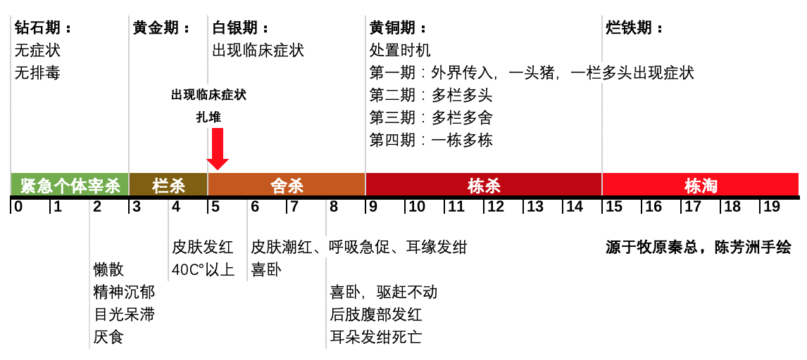
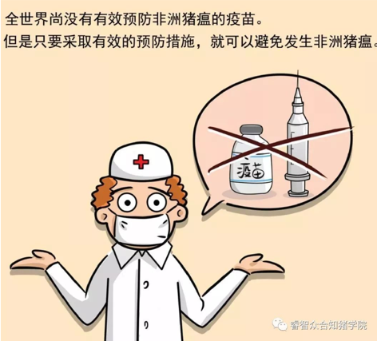
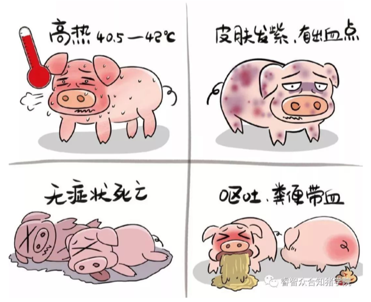
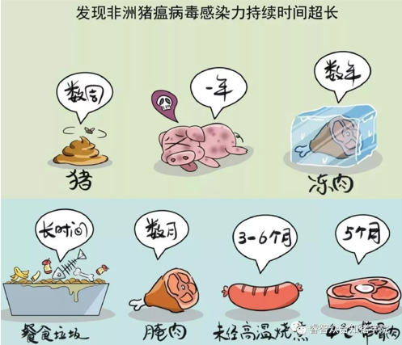
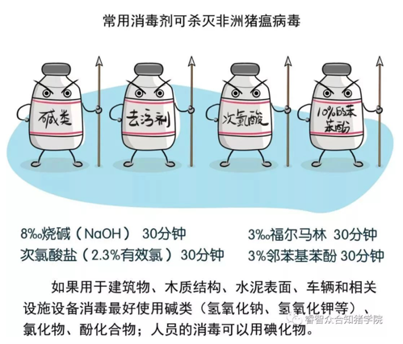

ASF非洲猪瘟
2019年4月5日
基本介绍：
- 1. 非洲猪瘟是一种高度接触传染性疾病
- 2. 非洲猪瘟能够产生大量与古典猪瘟极度相似的临床症状
- 3. ASF与CSF非常相似，因此必须使用实验室检测方法进行鉴别诊断，两者的临床症状和剖检病变几乎完全一样
- 4. ASF不同于CSF病毒，它能感染家猪、野猪和软蜱
- 5. 蜱的整个生命周期均可传播病毒和带毒
- 6. 非洲猪瘟病毒活力相对较强，能在环境和猪尸体中存活很长时间，猪肉经过腌制和烟熏并不能杀灭病毒
- 7. 猪群之间通过直接接触传播，偶尔也会通过简介接触传播，间接接触传播通常是由死猪的组织或分泌物的污染引起的
ASF发病过程及处理措施：


临床症状：
- 1. 非洲猪瘟强毒株引起的急性症状表现为部分猪高热至40-42℃，但几天后才可见明显的症状
- 2. 接着是与丧失，精神沉郁
- 3. 如果是白色种猪，则其肢体末端（如鼻、耳、尾、腿末端）发绀，皮肤特别是耳部和复侧皮肤可见弥散性出血
- 4. 发病猪打堆卷缩，颤抖，呼吸异常或咳嗽，卧地不起，跛腿，数天后昏睡、死亡
- 5. 如果设法让其站起，则其无法稳定地站立，几天内，病猪出现昏睡和死亡
- 6. 怀孕母猪流产，几天内，慢则几周内病原传至整个猪群，引起大多数猪死亡，一些猪发病后很快死亡

诊断：
- 1. 非洲猪瘟爆发早期死亡的猪只可能会无明显的病变，但随着疾病的进展，病变越来越严重
- 2. 淋巴结、肾脏、心脏、体腔内壁出血是常见的症状
- 3. 体腔内还可以观察到大量的出血性渗出液
- 4. 肺部有胶冻样液体，脾脏肿大、颜色变暗，轻微挤压后易碎
- 5. 最好的检测样品是扁桃体、血液、淋巴结和脾脏，慢性病例可以送血清做血清学试验
类似的疾病：
- 猪皮炎肾病综合症在大多数养殖地区经常发生，它与非洲猪瘟和古典猪瘟的临床症状和死后剖检组织病变很相似

